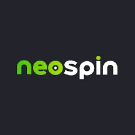

Australian Online Casinos
Australian Online Casinos
Best Online Casinos & Pokies for Australians 2025 | Solepower
In 2025, the Australian online casino industry hit a turning point. PayID now enables fast withdrawals, mobile platforms run smoothly, and offshore casinos offer huge bonuses and massive game libraries.
This guide highlights the top online Australian casinos for pokies, discussing bonuses, withdrawal speeds, and payment options while ensuring licensed, secure, and reliable platforms.
Complete Solepower’s Comparison Table: Our 20+ Best Australian Online Casinos for Pokies (PayID, Games & Bonuses)
| Rank | Casino Name | Min PayID Deposit |
Games / Pokies |
PayID Withdrawal |
Bonus / Offer |
|---|---|---|---|---|---|
| 1 |  Neospin Casino | AU$10-30 | 7,000+ | Instant to few minutes | Up to AU$10,000 + 100 FS |
| 2 |
|
AU$20-30 | 6,000+ | ~10 minutes | Up to AU$8,000 + 400 FS |
| 3 |
 HellSpin Casino
HellSpin Casino
|
AU$20 | 4,000–5,500+ | 1–60 minutes | Up to AU$4,600 + 150 FS |
| 4 |
 Lucky Dreams Casino
Lucky Dreams Casino
|
AU$30 | 9,500+ | Up to 24 hours | Up to AU$10,000 + 500 FS |
| 5 |
 Playfina Casino
Playfina Casino
|
AU$20-30 | 4,000+ | 24–48 hours | AU$2,600 + 800 FS |
| 6 |
 Casinonic Casino
Casinonic Casino
|
AU$20-30 | 1,500+ | Instant / very fast | Up to AU$5,000 |
| 7 |
 King Billy Casino
King Billy Casino
|
AU$20-30 | 4,000+ | 1–3 minutes | AU$2,500 + 250 FS |
| 8 |
 BitStarz Casino
BitStarz Casino
|
AU$20 | 2,500+ | 3–5 minutes | Up to 5 BTC + 180 FS |
| 9 |
 7Bit Casino
7Bit Casino
|
AU$15-30 | 2,000+ | 3–5 minutes | AU$10,800 + 250 FS |
| 10 |
|
AU$20-30 | Large library | Under 5 minutes | Up to AU$500 + 200 FS |
| 11 |
|
AU$10 | 3,800+ | 1–5 minutes | Up to AU$1,500 + 200 FS |
| 12 |
|
AU$20 | 2,500+ | 1–3 minutes | AU$4,000 + 100 FS |
| 13 |
|
AU$20 | Various | 1–2 hours | Up to AU$8,000 + 200 FS |
| 14 |
|
AU$20 | Moderate | 1–2 hours | Up to AU$7,500 + 550 FS |
| 15 |
 Casino Infinity
Casino Infinity
|
AU$20 | Mid-sized | Under 2 hours | Up to AU$10,000 + 200 FS |
| 16 |
 Boho Casino
Boho Casino
|
AU$30 | Several thousand | 1–3 hours | Up to AU$3,000 + 225 FS |
| 17 |
|
AU$30 | Moderate | Timing varies | Up to AU$750 + 200 FS |
| 18 |
|
AU$15 | Moderate | Timing varies | Up to AU$5,500 + 200 FS |
| 19 |
 Wild Tokyo Casino
Wild Tokyo Casino
|
Varies | Pokies and casino games | Depends on method | Up to €1,800 + 630 FS |
| 20 |
 Rolling Slots Casino
Rolling Slots Casino
|
AU$15-20 | Medium-size | Under 1 hour | Up to €3,500 + 730 FS |
Solepower Editor's Top Picks: Best Online Pokies Australia by Category (Fast Payouts, Mobile, High Rollers)
| Category | Casino | Key Highlights |
|---|---|---|
| Best Overall | Neospin Casino | 7,000+ pokies, instant PayID withdrawals, AU$10,000 welcome package, highly reliable. |
| Best for Pokies | Lucky Dreams Casino | 9,500+ games, includes major providers (Pragmatic Play, NetEnt, Microgaming), filters by RTP and volatility. |
| Fastest Withdrawals (PayID) | SkyCrown Casino | PayID payouts in ~10 minutes post-approval, many reports confirm under 15-minute total times. |
| Best Mobile | HellSpin Casino | Fully optimized for mobile browsers, fast loading, intuitive navigation, no app required (iOS & Android). |
| Best for High Rollers | King Billy Casino | High-limit PayID support, 1–3 minute withdrawal speeds, VIP program with dedicated managers and higher limits. |
Solepower’s In-Depth Casino Reviews: Top 10 Australian Online Pokies Sites Tested & Rated
1. Neospin Casino ⭐⭐⭐⭐⭐ (9.8/10) - Best Overall Casino for Aussies

| Feature | Available? | Details |
|---|---|---|
| Welcome Offer | ✅ | Up to AU$11,000 + 300 free spins over first 3 deposits (40x wagering on bonus + deposit, 30-day validity, max bet AU$7.50). |
| Huge Game Library / Slots & Casino Games | ✅ | 7,000+ pokies and casino games from major providers including Pragmatic Play, NetEnt, Play’n GO, Microgaming and Betsoft. |
| Live Casino | ✅ | Wide range of live blackjack, roulette, baccarat and game show tables. |
| Sportsbook / Sports Betting | ✅ | Great sports betting markets available. Live-betting available but no option for live-streaming. |
| Mobile Compatible (No App Required) | ✅ | Fully optimised for iOS & Android; games load in 2–3 seconds on 4G/5G. |
| Varied Payment Methods & PayID Support | ✅ | PayID withdrawals in under 5 minutes; also supports Neosurf, Skrill/Neteller (12–24 hrs) and crypto (10–30 mins). |
| VIP / Loyalty Programme | ✅ | Multi-tier VIP system with cashback, exclusive bonuses and personalised perks. |
Neospin Casino comes out swinging with one of the biggest casino game libraries available to Australian players. With more than 7,000 games spanning classic 3-reel pokies, Megaways titles, progressive jackpots pushing past the AU$1 million mark, and a full suite of casino table games, it’s built for players who want options: lots of them.
What really stands out is the advanced filtering system. You can sort pokies by RTP, volatility, mechanics, or provider, which makes it incredibly easy to zero in on anything above the 96.5% RTP sweet spot. Demo mode is also available, so you can take games for a spin before putting real money on the line.
Mobile compatibility is excellent. Everything runs directly in your browser with no apps to install, and game performance stays smooth even on average mobile connections.
PayID is fully integrated, meaning authenticated accounts can move money in or out within five minutes during normal AEST business hours. Deposits start from AU$10 and scale up to AU$10,000, and withdrawals are processed as soon as they’re approved. Weekend payouts may slow slightly (2–12 hours) but still outperform most Aussie-facing casinos. If PayID isn’t an option with your bank, the platform also supports Neosurf, crypto, and major e-wallets.
The welcome package is huge, up to AU$10,000 plus 100 free spins over three deposits, though the combined wagering on both deposit and bonus is something to keep in mind at 40x. The 30-day window, however, is generous by industry standards.
Most player complaints center around three practical issues: KYC verification can take 12–24 hours if documents aren’t uploaded cleanly, weekend withdrawal processing slows things down, and certain Australian banks occasionally block transactions unless international transfers are enabled.
2. SkyCrown Casino ⭐⭐⭐⭐⭐ (9.7/10) - Best Online Casino for Fastest PayID Withdrawals in Australia

|
Feature |
Available? |
Details |
|
Welcome Offer |
✅ |
Up to AU$8,000 + 400 free spins across four deposits (45x wagering on bonus only, 21-day limit, max bet AU$6, spins on Big Bass Bonanza at AU$0.25). |
|
Huge Game Library / Slots & Casino Games |
✅ |
6,000+ pokies including Buffalo, Lightning Link, Queen of the Nile, Wolf Gold, Sweet Bonanza & Razor Shark; providers include Pragmatic Play, NetEnt, Microgaming & Play’n GO. |
|
Live Casino |
✅ |
300+ Evolution & Ezugi tables, including Australian Blackjack, Speed Baccarat & Lightning Roulette; AU$1–10,000 bet limits. |
|
Sportsbook / Sports Betting |
❌ |
SkyCrown is casino-only with no sports betting section. |
|
Mobile Compatible (No App Required) |
✅ |
HTML5 games load instantly on Safari and Chrome; mobile performance mirrors desktop quality. |
|
Varied Payment Methods & PayID Support |
✅ |
PayID deposits in seconds; withdrawals in ~10 minutes post-approval. AU$20 minimum deposit; AU$10,000 max per transaction; AU$30,000 daily withdrawal limit. |
|
VIP / Loyalty Programme |
✅ |
5-tier VIP system offering 5–20% cashback, exclusive bonuses & higher-level perks. |
SSkyCrown Casino delivers a strong all-round experience for Australian players, offering more than 6,000 pokies ranging from classic pub favorites to modern high-volatility titles. Big-name providers like Pragmatic Play, NetEnt, Microgaming, and Play’n GO keep the library fresh and diverse, while the sorting tools make it easy to find the style of game you prefer.
The live casino section is equally impressive, with over 300 Evolution and Ezugi tables covering everything from Australian Blackjack to Lightning Roulette. Bet limits range from AU$1 to AU$10,000, making the platform suitable for both casual players and high rollers.
Mobile performance is excellent thanks to smooth HTML5 optimization across Safari and Chrome. Everything loads quickly and feels just as responsive as desktop play.
Banking stands out for its speed: PayID deposits are instant, and withdrawals typically land within 10 minutes once approved. Limits are generous, and our own test withdrawal arrived in just 11 minutes. If PayID isn’t an option, players can rely on additional payment methods.
The welcome bonus offers strong value with up to AU$8,000 and 400 free spins, though the 45x wagering is slightly higher than average. Weekly reloads and VIP cashback help offset this for ongoing players.
Common player concerns tend to be practical rather than critical: public holidays slow processing times, unclear documents can delay verification, and medium-volatility pokies usually clear bonuses faster. Overall, satisfaction remains consistently high, supported by reliable 24/7 live chat and quick response times.
3. HellSpin Casino ⭐⭐⭐⭐½ (9.5/10) - Best Casino for Mobile Experience for Australian Users

|
Feature |
Available? |
Details |
|
Welcome Offer |
✅ |
Up to AU$4,600 + 150 free spins across four deposits () |
|
Huge Game Library / Slots & Casino Games |
✅ |
4,000–5,500+ games with high-RTP and high-volatility focus. Key titles include Gates of Olympus (96.5%), Sweet Bonanza (96.51%), The Dog House Megaways (96.55%), Gonzo's Quest, Dead or Alive 2, and Nolimit City’s Fire in the Hole & Tomb Stone RIP. |
|
Live Casino |
✅ |
200+ Evolution Gaming and Pragmatic Play Live tables. |
|
Sportsbook / Sports Betting |
❌ |
HellSpin is purely a casino platform; no sportsbook available. |
|
Mobile Compatible (No App Required) |
✅ |
Fully optimized for mobile browsers; intensive Megaways titles run smoothly without frame rate drops. |
|
Varied Payment Methods & PayID Support |
✅ |
PayID withdrawals take 1–60 minutes (most under 1 hour); factors affecting timing include withdrawal amount, business hours, and weekday processing. |
|
VIP / Loyalty Programme |
✅ |
4-tier loyalty system offering cashback, bonuses, and exclusive perks. |
HellSpin Casino prioritizes quality over quantity, delivering a curated selection of 4,000–5,500 games with a focus on high-RTP and high-volatility pokies. Pragmatic Play dominates the library with top titles like Gates of Olympus, Sweet Bonanza, and The Dog House Megaways. NetEnt adds classics such as Gonzo's Quest and Dead or Alive 2, while Nolimit City’s extreme volatility titles offer potential wins exceeding 50,000x.
The site’s dark red and black interface is visually striking but highly functional, with intuitive search and filtering tools. The live casino section features over 200 Evolution Gaming and Pragmatic Play Live tables, catering to both casual and high-stakes players.
Mobile performance is smooth, even with graphics-intensive Megaways games, and no app is required to play.
The Welcome bonus gives up to A$4600 and150 free spins across 4 deposits. A minimum deposit of AUD 30 is required. Winnings from free spins carry a 40x wagering requirement.
Banking is efficient, with PayID withdrawals processed in 1–60 minutes depending on the amount, business hours, and weekday timing. In testing, an AU$500 withdrawal was completed in just 22 minutes post-KYC.
4. Lucky Dreams Casino ⭐⭐⭐⭐½ (9.4/10)- Best Online Casino in Australia for Pokies

|
Feature |
Available? |
Details |
|
Welcome Offer |
✅ |
Up to AU$10,000 + 500 bonus spins across five deposits (40x wagering, 30-day limit). |
|
Huge Game Library / Slots & Casino Games |
✅ |
9,500+ games from 50+ providers, including 7,000+ pokies such as Buffalo, Lightning Link, Money Train 3 (98% RTP, 50,000x), and San Quentin xWays (96.03%, 150,000x). Filters sort by RTP, volatility, max win, and feature type. |
|
Live Casino |
✅ |
400+ Evolution Gaming, Pragmatic Play Live, and Ezugi tables with AU$0.50–25,000 bet ranges. |
|
Sportsbook / Sports Betting |
❌ |
Lucky Dreams is purely a casino platform; no sportsbook is available. |
|
Mobile Compatible (No App Required) |
✅ |
Fully optimized for iOS and Android browsers, games load smoothly without app installation. |
|
Varied Payment Methods & PayID Support |
✅ |
PayID withdrawals take 6–24 hours (12 hours on average for non-VIP, 2–6 hours for VIP). Our test: AU$1,200 requested at 11:00 PM arrived at 9:47 AM next day (~11 hours). |
|
VIP / Loyalty Programme |
✅ |
Multi-tier system with progressive benefits, cashback, exclusive bonuses, and faster withdrawals for higher tiers. |
Lucky Dreams Casino has the largest library as Real money casino in our rankings, with over 9,500 games from 50+ providers. The pokies selection is particularly impressive, ranging from pub classics like Buffalo and Lightning Link to high-volatility hits such as Money Train 3 and San Quentin xWays, offering massive potential payouts. Advanced filters make it easy to sort by RTP, volatility, max wins, or feature types. Rare provider content like Hacksaw Gaming, BTG Megaways, and Nolimit City is also available.
The live casino features 400+ tables across Evolution Gaming, Pragmatic Play Live, and Ezugi, covering all major games with bets from AU$0.50 up to AU$25,000.
Mobile play is smooth and responsive without the need for an app, maintaining full functionality on modern browsers.
Banking via PayID is generally reliable, taking 6–24 hours for withdrawals (2–6 hours for VIPs). First withdrawals may take longer due to KYC verification, and weekend or peak-time requests can slow processing.
The welcome package is generous, with five deposits offering up to AU$10,000 plus 500 spins. Wagering requirements are fair at 40x, and weekly reloads enhance ongoing value. Despite minor delays in withdrawals and support, Lucky Dreams remains highly rated for its vast game library and fair bonus conditions.
5. BitStarz Casino ⭐⭐⭐⭐ (9.2/10) - Best Crypto-based Casino For Aussies

|
Feature |
Available? |
Details |
|
Welcome Offer |
✅ |
Up to 300% crypto bonus up to 5 BTC + 180 free spins. Wagering requirement: 40x, relatively high compared to other crypto casinos. |
|
Huge Game Library / Slots & Casino Games |
✅ |
2,500+ games from NetEnt, Microgaming, Pragmatic Play, Betsoft, and Endorphina. Low-RTP games (<94%) rarely appear. |
|
Live Casino |
✅ |
200+ Evolution Gaming tables, including Bitcoin-specific live dealer games. |
|
Sportsbook / Sports Betting |
❌ |
BitStarz is a casino-only platform; no sportsbook available. |
|
Mobile Compatible (No App Required) |
✅ |
Fully optimized for iOS and Android browsers; smooth gameplay without downloads. |
|
Varied Payment Methods & PayID Support |
✅ (with caveats) |
PayID withdrawals 3–5 minutes (5% failure rate; fallback to bank 2–3 days or crypto 10–15 min). Crypto deposits/withdrawals in 10–15 minutes; unlimited max (manager approval for AU$100,000+). |
|
VIP / Loyalty Programme |
✅ |
4-tier VIP system with crypto perks, cashback, exclusive bonuses, and higher withdrawal limits. |
BitStarz Casino pioneered cryptocurrency gambling and has maintained a strong reputation for over 10 years. The platform offers a mix of traditional and crypto payments, supporting Bitcoin, Ethereum, Litecoin, Dogecoin, and Tether alongside AUD via PayID, cards, and e-wallets.
The game library includes over 2,500 titles from top providers like NetEnt, Microgaming, Pragmatic Play, Betsoft, and Endorphina. Low-RTP games under 94% are generally excluded, helping players focus on high-quality, rewarding titles.
Live casino coverage is robust, with 200+ Evolution Gaming tables, including Bitcoin-specific games for crypto players.
Mobile play is smooth and fully functional on browsers without needing an app.
Banking is fast and versatile: PayID withdrawals take 3–5 minutes but may fail about 5% of the time, requiring fallback options. Crypto withdrawals are consistent at 10–15 minutes, with generous limits.
The welcome package is crypto-focused, offering up to 5 BTC and 180 free spins with 40x wagering. Player notes include occasional geo-blocking of certain titles and bonus abuse flags, but overall satisfaction is high, backed by reliable support and strong professional complaint resolution.
6. King Billy Casino ⭐⭐⭐⭐ (9.0/10) - Best Online Casino for Australian High Rollers

|
Feature |
Available? |
Details |
|
Welcome Offer |
✅ |
Up to AU$2,500 + 250 free spins on first deposit (50x wagering, 7-day limit, max bet AU$5). |
|
Huge Game Library / Slots & Casino Games |
✅ |
4,000+ pokies from Pragmatic Play, NetEnt, Microgaming, Play’n GO, Yggdrasil, Quickspin. 95% of pokies RTP 96%+, 200+ games over 97% RTP. High-volatility titles include Dead or Alive 2, Jammin’ Jars, Book of 99. 50+ table game variants included. |
|
Live Casino |
✅ |
150+ Evolution Gaming tables with AU$1–15,000 bet ranges. |
|
Sportsbook / Sports Betting |
❌ |
King Billy focuses solely on casino gaming; no sportsbook available. |
|
Mobile Compatible (No App Required) |
✅ |
Fully optimized for iOS and Android browsers; games load quickly without an app. |
|
Varied Payment Methods & PayID Support |
✅ |
PayID withdrawals in 1–3 minutes for verified accounts. Testing: AU$2,000 withdrawal approved in 1 minute, funds received in 2 minutes. |
|
VIP / Loyalty Programme |
✅ |
Royal-themed 5-tier VIP: Peasant, Knight, Count, Duke, King. Higher tiers unlock faster withdrawals, personal account manager, exclusive tournaments, and 10–25% monthly cashback. |
King Billy Casino is for both high rollers and regular players with a flexible gaming experience and premium services. Its library of over 4,000 pokies includes a strong focus on high-RTP games, with most titles exceeding 96% RTP and over 200 surpassing 97%. High-volatility favorites such as Dead or Alive 2, Jammin’ Jars, and Book of 99 deliver massive win potential, while table games offer 50+ variations of blackjack, roulette, and baccarat.
The live casino section features 150+ Evolution Gaming tables, supporting a wide range of bets from AU$1 to AU$15,000.
Mobile performance is smooth across iOS and Android browsers without requiring downloads, keeping gameplay fast and reliable.
Banking via PayID is one of the fastest available, with withdrawals for verified accounts processed in 1–3 minutes. Testing confirms rapid processing times even for large amounts.
The welcome package gives new players up to AU$2,500 and 250 free spins, with a 50x wagering requirement to be completed in 7 days.
The royal VIP program has five tiers, namely Peasant, Knight, Count, Duke, and King, unlocking perks such as faster withdrawals, a personal account manager, exclusive tournaments, and monthly cashback of 10–25%. While first withdrawals for new accounts may take slightly longer (3–6 hours) and strict max bet limits apply, the overall service quality is high, reflected in a 4.4/5 rating with professional support responding within 10 minutes during business hours.
7. 7Bit Casino ⭐⭐⭐⭐ (8.9/10) - Best Australian Casino for Extensive Gaming Experience

|
Feature |
Available? |
Details |
|
Welcome Offer |
✅ |
Up to AU$10,800 + 250 free spins across first four deposits (40x wagering, 30-day limit). |
|
Huge Game Library / Slots & Casino Games |
✅ |
2,000+ pokies from Betsoft, NetEnt, Microgaming, Pragmatic Play, and Endorphina. Crypto-themed pokies included; fair RTP games prioritized. |
|
Live Casino |
✅ |
Variety of live dealer games included (providers not specified). |
|
Sportsbook / Sports Betting |
❌ |
7Bit is a casino-only platform; no sportsbook available. |
|
Mobile Compatible (No App Required) |
✅ |
Fully optimized for iOS and Android browsers; smooth gameplay without app downloads. |
|
Varied Payment Methods & PayID Support |
✅ |
PayID deposits are instant (AU$15 minimum); withdrawals 3–5 minutes for verified accounts. Crypto deposits/withdrawals (Bitcoin, Litecoin, Ethereum, Dogecoin, Bitcoin Cash) take 10–20 minutes with unlimited max. |
|
VIP / Loyalty Programme |
✅ |
Multi-tier loyalty system with rewards scaling by VIP level. |
7Bit Casino blends crypto-friendly gambling with support for traditional payment methods. The game library features over 2,000 pokies from top providers including Betsoft, NetEnt, Microgaming, Pragmatic Play, and Endorphina, with a focus on Bitcoin-themed and fair RTP titles.
Banking is fast and convenient: PayID deposits are instant, withdrawals clear in 3–5 minutes for verified accounts, and cryptocurrency deposits/withdrawals are processed in 10–20 minutes with generous limits.
The welcome bonus provides up to AU$8,000 and 50 free spins, with a 40x wagering requirement over 30 days. Weekly promotions like reload bonuses and free spins further enhance value.
Mobile performance is strong on both iOS and Android browsers, and customer support is available 24/7 via live chat, typically responding in 3–5 minutes.
While primarily designed for crypto users, 7Bit also accommodates traditional payments effectively, making it a solid choice for a wide range of players.
8. Rabona Casino ⭐⭐⭐⭐ (8.8/10) - Best AustralianOnline Casino for Safety and Security

|
Feature |
Available? |
Details |
|
Welcome Offer |
✅ |
Casino: 100% match up to AU$500 + 200 free spins (35x wagering). Sportsbook: 100% free bet up to AU$500 (35x rollover). |
|
Huge Game Library / Slots & Casino Games |
✅ |
5,000+ casino games including slots, table games, and live dealer titles. |
|
Live Casino |
✅ |
Live dealer tables included within the 5,000+ casino games. |
|
Sportsbook / Sports Betting |
✅ |
Full sportsbook covering football, basketball, cricket, rugby, tennis, and Australian sports with competitive odds. |
|
Mobile Compatible (No App Required) |
✅ |
Fully optimized for mobile browsers; casino and sportsbook features run smoothly on iOS and Android. |
|
Varied Payment Methods & PayID Support |
✅ |
PayID withdrawals under 5 minutes for verified accounts. Same balance and bonuses can be used across casino and sportsbook. |
|
VIP / Loyalty Programme |
✅ |
Multi-tier VIP program awarding loyalty points for both casino and sports. Points can be redeemed for cashback, reload bonuses, and personal account management. |
Rabona Casino combines a full-featured online casino and sportsbook in one platform, offering over 5,000 casino games alongside a competitive sportsbook covering football, basketball, cricket, rugby, tennis, and Australian sports.
Banking is fast and reliable, with PayID withdrawals processed in under five minutes for verified accounts. Players can use the same balance and bonuses across both casino and sportsbook products.
The welcome offers are tailored to the product: casino players can claim up to AU$500 + 200 free spins, while sports players receive a 100% free bet up to AU$500. Both come with a 35x wagering or rollover requirement.
Mobile play is smooth, with both the casino and sportsbook fully optimized for iOS and Android browsers without the need for downloads.
The VIP program spans both casino and sportsbook, allowing loyalty points to be earned and redeemed for cashback, reload bonuses, and personal account management, rewarding consistent players across all activities.
9. WildBlaster Casino ⭐⭐⭐⭐ (8.7/10) - Best Online Casino For Australian Slot Enthusiasts

|
Feature |
Available? |
Details |
|
Welcome Offer |
✅ |
Up to AU$1,500 + 200 free spins (40x wagering). |
|
Huge Game Library / Slots & Casino Games |
✅ |
3,800+ pokies from various providers. |
|
Live Casino |
❌ |
No live dealer games mentioned. |
|
Sportsbook / Sports Betting |
❌ |
WildBlaster is a casino-only platform. |
|
Mobile Compatible (No App Required) |
✅ |
Fully optimized for iOS and Android browsers. |
|
Varied Payment Methods & PayID Support |
✅ |
PayID withdrawals in 1–5 minutes for amounts under AU$5,000; minimum deposit AU$10. |
|
VIP / Loyalty Programme |
❌ |
Not specified. |
WildBlaster Casino is perfect for budget-conscious players, offering over 3,800 pokies and a very low minimum deposit of AU$10. PayID withdrawals are fast, typically clearing in 1–5 minutes for amounts under AU$5,000.
The welcome package includes AU$1,500 plus 200 free spins with a 40x wagering requirement, providing good value for new players who want quick access to funds.
While there is no live casino or sportsbook, the platform is fully mobile-optimized, allowing smooth gameplay on iOS and Android browsers. Its low deposit requirement and fast payouts make it an ideal choice for casual and budget players.
10. Ozwin Casino ⭐⭐⭐⭐ (8.6/10) - Best Australian Online Casino for Themed Experience

|
Feature |
Available? |
Details |
|
Welcome Offer |
✅ |
Up to AU$4,000 + 100 free spins. Weekly promotions include Friday reloads and weekend cashback. |
|
Huge Game Library / Slots & Casino Games |
✅ |
2,500+ pokies with a strong Australian theme and wizard branding. |
|
Live Casino |
❌ |
No live dealer games mentioned. |
|
Sportsbook / Sports Betting |
❌ |
Ozwin is a casino-only platform. |
|
Mobile Compatible (No App Required) |
✅ |
Fully optimized for iOS and Android browsers; no app needed. |
|
Varied Payment Methods & PayID Support |
✅ |
PayID withdrawals clear in 1–3 minutes. |
|
VIP / Loyalty Programme |
✅ |
Multi-tier VIP program offering exclusive perks and rewards. |
Ozwin Casino offers a uniquely Australian-themed gaming experience with over 2,500 pokies featuring wizard-inspired branding. The platform is fully mobile-optimized, ensuring smooth gameplay on both iOS and Android without the need for an app.
Banking is fast and convenient, with PayID withdrawals typically clearing in 1–3 minutes.
The welcome package provides AU$2,000 plus 100 free spins, complemented by weekly promotions such as Friday reloads and weekend cashback. A VIP program rewards regular players with exclusive perks, making Ozwin an appealing choice for both casual and loyal Australian players.
How Australian Players Choose the Best Online Casino for Real-Money Pokies in 2025

Licensed Australian Casino Sites Offering Fair Pokies From Pragmatic Play, NetEnt & Microgaming
Every online casino Australia site we recommend holds an active license from Curaçao eGaming, Malta Gaming Authority (MGA), or similar recognized regulatory bodies. Licenses guarantee third-party game auditing, dispute resolution mechanisms, and legal accountability.
Security requirements include 256-bit SSL/TLS encryption for all transactions, two-factor authentication (2FA) options, and eCOGRA or iTech Labs certification for game fairness. We verify these claims by checking certificate validity and reading audit reports where available.
Pokies RTP Explained: Why Return-to-Player Percentages Matter When Choosing Australian Online Casinos
Return to Player (RTP) percentages determine long-term payout rates. A 96% RTP pokie returns $96 per $100 wagered over millions of spins. The best online casino Australia platforms stock pokies with RTPs above 96%, with some titles reaching 98-99%.
Top providers include Pragmatic Play (Gates of Olympus 96.5%, Sweet Bonanza 96.51%), NetEnt (Starburst 96.09%, Gonzo's Quest 95.97%), and Play'n GO (Book of Dead 96.21%). Aristocrat pokies like Buffalo (94.85%) and Lightning Link (96.1%) remain Australian favorites despite lower RTPs.
Game Variety at Best Online Casinos Australia: Pokies, Live Dealer & Table Games Selection
A quality Australian online casino offers 2,000+ games minimum. This includes classic 3-reel pokies, video pokies with bonus rounds, Megaways titles (up to 117,649 ways to win), and progressive jackpots.
Live casino sections should feature blackjack, roulette, baccarat, and game shows from Evolution Gaming, Pragmatic Play Live, or Ezugi. Live dealer games offer RTPs exceeding 99% for blackjack with basic strategy and 97.3% for single-zero European roulette.
Fast Payout Casinos for Australian Pokies: What to Expect With PayID & Instant Withdrawals
PayID dominates Australian online casino banking in 2025. This phone number or email-linked system enables instant deposits and withdrawals in under 5 minutes at properly configured casinos. Over 100 Australian banks support PayID, with zero transaction fees.
Other payment methods available include instant bank transfers via POLi, prepaid vouchers such as Neosurf, and popular e-wallets like Skrill, Neteller, and MiFinity. For enhanced privacy, cryptocurrencies like Bitcoin, Ethereum, and Litecoin are also accepted, typically processing withdrawals quickly within 10 to 60 minutes.
Australian Online Casino Bonuses & Promotions: Welcome Packages, Free Spins & Cashback Deals
Welcome bonuses range from 100% to 300% deposit matches plus 100-500 free spins across first deposits. A AU$100 deposit with a 200% bonus yields AU$300 in total playing funds.
Critical Terms to Check:
- Wagering requirements (30x-50x is standard; avoid 60x+)
- Maximum bet limits during bonus play (usually AU$5-10)
- Game contribution (pokies contribute 100%, table games often 10-20%)
- Maximum cashout caps (some bonuses cap winnings at AU$5,000)
- Time limits (7-30 days to complete wagering)
Players may get more value after their first deposits with Reload Bonuses, which usually match 50–100% of the next deposit, and Cashback, which gives 10–25% back on net losses. VIP Programs, which provide exclusive advantages, are also available to loyal gamers.
Responsible Gambling Features for Aussie Players: Session Limits, Reality Checks & Self-Exclusion Options
Genuine casinos care about their players' safety and provide them a lot of resources to help them gamble responsibly. These usually let you establish limitations on how much money you may deposit or lose each day, week, or month.
They also let players set limitations on how long they may play by giving them session time restrictions and reality check warnings that come up every 60 to 90 minutes to stop them from playing for too long. Players may also use self-exclusion tools to temporarily (1–6 months) or permanently prohibit access to their accounts.
In the footers, there should be links to Gambling Help Online (1800 858 858), Lifeline (13 11 14), and the Victorian Responsible Gambling Foundation. If a casino hides bonus conditions, has complicated withdrawal procedures, or doesn't have tools for responsible gaming, that's a warning sign.
Fast Payout Online Casinos Australia: PayID, Cryptocurrency & E-Wallet Withdrawal Times Compared

Why Australian Players Prefer PayID for Online Gambling: Instant Deposits & Zero-Fee Withdrawals
PayID revolutionized Australian online casino banking by linking phone numbers or email addresses directly to bank accounts. Over 100 Australian banks support PayID, including Commonwealth Bank, NAB, Westpac, ANZ, ING, and Up Bank.
The system enables instant bank-to-bank transfers without sharing BSB or account numbers. Deposits appear in casino accounts within 5-15 seconds. Withdrawal processes take 1-60 minutes at properly configured casinos compared to 2-5 days for traditional bank transfers.
PayID operates 24/7 including weekends and public holidays (though casino approval systems may pause). Transaction limits typically range AU$10,000-30,000 per day depending on your bank. Zero fees apply from most Australian banks; the casino side charges nothing.
Security matches traditional banking with fraud monitoring, transaction verification through banking apps, and instant notifications. The system doesn't expose sensitive account details to merchants, reducing data breach risks.
PayID Pros & Cons for Australian Online Casinos: Speed, Security & Bank Compatibility
Pros:
- Instant deposits (5-15 seconds)
- Fast withdrawals (1-60 minutes at top casinos)
- Zero transaction fees from both casinos and most banks
- No sensitive account detail sharing with merchants
- 24/7 availability
- Bank-grade security with fraud monitoring
- Supported by 100+ Australian banks
- Simple mobile app integration
Cons:
- Australia-only system (AUD currency exclusively)
- Daily transaction limits (AU$10,000-30,000 depending on bank)
- Some Australian banks block gambling transactions
- Not universally supported across all online casinos
- Weekend casino processing delays despite 24/7 PayID availability
- Requires bank account with participating institution
How to Set Up PayID for Online Pokies Australia (Step-by-Step Mobile & Desktop Guide)
Method 1: Mobile Banking App (Most Common)
- Open your banking app → Settings/Payments → PayID → Create New.
- Link your account, choose PayID type (phone/email), enter details.
- Verify via SMS/email, set PayID name, and confirm.
- Activates immediately for use at all participating merchants, including casinos.
Setup takes 2-3 minutes. Your PayID activates immediately and works across all participating merchants including online casinos.
Method 2: Desktop Internet Banking
- Log in → Profile/Manage PayID → Create PayID.
- Select account, type (phone/email), enter details, verify.
- Set PayID name and activate.
- Optional: test transfer to confirm functionality.
Make a small test transfer to a friend or family member with PayID to confirm functionality before casino use.
Depositing at Australian Online Casinos Using PayID: Complete Walkthrough From Banking App to Casino Account
Here’s how the whole process works:
- Complete casino signup with correct personal info.
- Go to Deposit → Select PayID → Enter amount.
- Open banking app → PayID → Enter or scan casino PayID → Confirm recipient & amount.
- Funds appear in 5–15 seconds.
If the deposit doesn't appear within 60 seconds, contact casino support via live chat with the transaction reference number from your banking app.
Withdrawing Winnings via PayID at Australian Online Pokies Sites: KYC Requirements & Processing Times
Here’s how you can withdraw via PayID as well:
- Complete KYC verification (ID, address, PayID-linked bank).
- Ensure bonus wagering is complete.
- Withdraw → Select PayID → Enter linked phone/email → Amount → Submit.
- Funds arrive instantly once approved.
PayID Limits, Fees & Supported Australian Banks: CommBank, NAB, Westpac, ANZ & More
PayID is one of the quickest and easiest ways to pay at Australian online casinos. All of the suggested casinos don't impose fees for deposits or withdrawals, and most Australian banks recognize PayID as local AUD, so you don't have to pay extra for overseas transactions. Some of the banks that work with this include big ones like CommBank, NAB, Westpac, ANZ, Bendigo, BOQ, Suncorp, ING, and Macquarie. There are also digital banks and regional credit unions that work with it. Some banks often limit payments for gamblers. You can fix this by allowing international or internet transactions or by using an account that is more gambling-friendly.
Technical difficulties, wrong information, inadequate KYC, big withdrawals, or processing on the weekend are the most common reasons for PayID delays or problems. Some common remedies include double-checking transaction data, completing KYC quickly, breaking big withdrawals into smaller ones under AU$5,000, and sending images to casino support. POLi, Neosurf, or cryptocurrency are other ways to pay.
PayID support is verified through live testing, terms review, forum reports, and direct casino contact. Casinos marked “PayID supported” in our listings have passed all verification steps as of December 2025, ensuring fast, secure, and reliable deposits and withdrawals for Australian players.
Best Online Pokies Australia 2025: High-RTP Games, Megaways & Progressive Jackpots to Play
Top 10 High-RTP Pokies for Australian Players: Book of 99, Blood Suckers & Mega Joker (96-99% RTP)
- Book of 99 (Relax Gaming) - 99% RTP, 9,900x max win. The highest RTP pokie available at Australian online casinos. Egyptian theme with expanding symbols.
- Blood Suckers (NetEnt) - 98% RTP, 900x max win. Vampire theme with bonus game featuring coffin selections. Low volatility means frequent small wins.
- Mega Joker (NetEnt) - 99% RTP in Supermeter mode, 2,000x max win. Classic fruit machine requiring maximum bet for best RTP. Progressive mystery jackpot.
- 1429 Uncharted Seas (Thunderkick) - 98.6% RTP, 670x max win. Sea exploration theme with expanding wilds. Medium volatility.
- The Catfather (Pragmatic Play) - 98.1% RTP, 1,000x max win. Mafia cat theme with free spins and multipliers.
- Jackpot 6000 (NetEnt) - 98.9% RTP in Supermeter mode, 6,000x max win. Classic three-reel design requires maximum bet for optimal RTP.
- Ooh Aah Dracula (Barcrest) - 99% RTP, 1,000x max win. Vampire theme with free spins bonus. Rare high-RTP title.
- Big Bass Bonanza (Pragmatic Play) - 96.71% RTP, 2,100x max win. Fishing theme with money collection mechanic. Medium volatility, popular among Australians.
- Gates of Olympus (Pragmatic Play) - 96.5% RTP, 5,000x max win. Greek mythology with tumbling reels and multipliers up to 500x. High volatility.
- Sweet Bonanza (Pragmatic Play) - 96.51% RTP, 21,100x max win. Candy theme with tumbling reels. Free spins with increasing multipliers. High volatility.
Popular Online Pokies Types in Australia: Classic 3-Reel, Video Pokies, Megaways & Progressive Jackpots
- Classic 3-Reel Pokies: Traditional fruit machine style with simple gameplay. Mega Joker, Jackpot 6000, and Joker Strike appeal to players seeking uncomplicated spins. Lower maximum wins but higher hit frequency.
- Video Pokies (5-Reel): Modern pokies with multiple paylines (10-50), bonus rounds, free spins, and wild/scatter symbols. Book of Dead, Wolf Gold, and Starburst dominate this category. Balanced volatility and entertainment.
- Megaways Pokies: Big Time Gaming's mechanic offering 117,649 ways to win through random reel modifiers. Bonanza, Extra Chilli, and White Rabbit provide massive win potential. High volatility—expect long dry spells followed by explosive wins.
- Cluster Pays Pokies: Wins form from symbol clusters rather than paylines. Reactoonz, Jammin' Jars, and Sweet Bonanza use this system. Tumbling reels create chain reactions for multiple consecutive wins.
- Progressive Jackpot Pokies: Pooled prize money growing with each bet across network of casinos. Mega Moolah holds record for largest online casino win (AU$30+ million). Divine Fortune, Major Millions, and Hall of Gods offer life-changing jackpots. Low base game RTP (92-94%) as portion funds jackpot.
Pokies Volatility Explained for Aussies: Low, Medium & High Variance Games Compared
Let’s explain what volatility really means. It will help you make judgments on what to play and what to avoid:
- Low Volatility translates to frequent small wins. Ideal for extended play sessions and bankroll preservation. Examples: Starburst, Blood Suckers, Jack Hammer. Variance favors consistent entertainment over massive payouts.
- Medium Volatility means balanced win frequency and payout sizes. Wolf Gold, Book of Dead, and Big Bass Bonanza mix regular wins with occasional larger hits. Suits most player types.
- High Volatility is rare wins but significant payout potential. Dead or Alive 2, Razor Shark, and San Quentin xWays can deliver 50,000x+ wins. Requires a larger bankroll and patience. Risk-reward ratio favors big-win hunters.
Live Casino Australia & Table Games: Blackjack, Roulette, Baccarat RTP & Evolution Gaming Options
- Blackjack: RTP 99.5%+ with basic strategy. Single-deck variants offer the best odds. Live dealer blackjack from Evolution Gaming includes Speed Blackjack, Infinite Blackjack, and Blackjack Party.
- Roulette: European (97.3% RTP single zero) beats American (94.74% double zero). Lightning Roulette adds random multipliers up to 500x. Australian players prefer European wheels.
- Baccarat: 98.94% RTP on Banker bets, 98.76% on Player. Lowest house edge in the casino. Speed Baccarat and Baccarat Squeeze offer different pace options.
- Live Game Shows: Crazy Time (96.08%), Monopoly Live (96.23%), and Dream Catcher (96.58%) combine pokies mechanics with live hosting. Interactive bonus rounds and community jackpots.
Australian Online Casino Bonuses Explained: Welcome Offers, Wagering Requirements & VIP Programs
Australian Online Casino Welcome Bonuses & Free Spins: Understanding Wagering Requirements & Max Bet Limits
Welcome bonuses increase your starting balance but come with wagering requirements before you can withdraw. For example, a 100% bonus on an AU$100 deposit gives AU$200 to play with. If the wagering is 40x on the deposit and bonus, you’ll need to wager AU$8,000. Max bets are usually capped at around AU$5 per spin, and clearing the bonus can take dozens of hours, making it difficult for casual players.
Free spins are generally easier to clear. For example, 100 spins at AU$0.25 equal AU$25 in value, with winnings also tied to wagering. With a 96% RTP, winnings are often close to AU$24, requiring roughly AU$960 in bets to unlock.
Always check the bonus terms. Max bet limits are usually AU$5–8 per spin, and going over can void your bonus. Pokies usually count 100% toward wagering, while table and live games contribute far less or may be excluded. Many bonuses also have max cashout caps and time limits of 7–30 days, and jackpot or high-RTP games are often restricted.
Reload Bonuses & VIP Loyalty Programs at Australian Online Casinos: Weekly Cashback & Exclusive Perks
Reload bonuses reward returning players with 50–100% deposit matches, while weekly promotions provide consistent extra value. For instance, Mondays may provide a 75% reload up to AU$300, Wednesdays give 50 free spins on a new pokie, Fridays offer a 50% reload up to AU$500, and Sundays give VIPs 15% cashback on net losses above AU$100. For every AU$10–20 bet, loyalty programs provide points that may be used to get more cash, free spins, or real-life gifts.
VIP levels provide you further benefits: Bronze comes with normal service and basic promos. Silver adds priority withdrawals and 5% cashback per month. Gold comes with a personal account manager, 10% cashback, and exclusive tournaments. Platinum comes with quicker withdrawals, 15–20% cashback, luxury presents, and invites to events. VIP perks usually include lower betting requirements, larger withdrawal limits, quick processing, birthday bonuses, and the chance to play in high-stakes tournaments.
Bankroll Management for Australian Pokies Players: Setting Session Limits & Responsible Gambling Strategies
Effective bankroll management starts with setting a total gambling budget using only disposable income. For example, an AU$500 monthly entertainment budget can be divided into eight sessions of AU$62.50 each, allowing two sessions per week.
Set reasonable win objectives and stick to session loss limitations. If you double AU$62.50 session to AU$125, you may have to withdraw, but if you chase AU$1,000 from the same amount, you might lose a lot of money. Bet sizes should remain between 1% and 2% of the session bankroll. For example, for AU$62.50 session, this would be AU$0.60 to 1.25 every spin, which would provide you 50 to 100 spins and chances to score bonus features without going overboard.
Responsible gambling tools:
- Deposit limits: Set daily/weekly/monthly caps in casino account settings. Casino blocks deposits exceeding the limit regardless of requests.
- Loss limits: Maximum loss threshold per day/week/month. System prevents further play after hitting the limit.
- Session time limits: Alerts after 60-90 minutes. Option to set 2-4 hour maximum daily playtime with forced logout.
- Reality checks: Popup notifications every 30-60 minutes showing time played and net win/loss. Breaks prevent hypnotic continuous play.
- Self-exclusion: Temporarily or permanently ban yourself from the casino. 1, 3, 6, or 12-month options, or permanent exclusion. Casino cannot reactivate the account during the exclusion period.
- Cool-off periods: 24-hour to 7-day break from the casino. Less severe than self-exclusion but prevents impulsive play.
Australian support resources:
- Gambling Help Online: 1800 858 858 (24/7 counseling)
- Lifeline: 13 11 14 (crisis support)
- Financial Counselling Australia: 1800 007 007
- Victorian Responsible Gambling Foundation: Online resources and counseling
How to Verify Safe Online Casinos Australia: License Checks, SSL Security & Red Flags to Avoid
Verifying Casino Licenses for Australian Players: Curaçao, MGA & Kahnawake Regulatory Bodies Explained
Before you play at an Australian online casino, you need to make sure that it is authentic and safe. The first thing you should do is check the bottom of the homepage for the casino's license. Look for a well-known organization that regulates gaming, such as the Malta Gaming Authority or Curaçao eGaming. You should also check for a license number and a logo that you may click on to go to a validator.
Here are some of the red flags to keep note of:
- No license information in footer
- Broken license seal links
- License number doesn't validate on regulator site
- "License pending" status lasting months
- Claiming license from non-existent or fake regulatory bodies
SSL Encryption & HTTPS Security at Australian Online Casinos: How to Check Certificate Validity
It's equally necessary to take security steps. Make sure that the casino employs SSL encryption, which you can see in the browser as a padlock symbol. A trusted authority should provide certificates to the right domain, and they should be legitimate and utilize TLS 1.2 or 1.3. The URL of the website must start with "https://," and the certificate must use strong encryption (2048 bits or more) with SHA-256 or something similar.
Here are some of the red flags to keep note of:
- HTTP (not HTTPS) on login or payment pages
- Browser displaying "Not Secure" warnings
- Expired SSL certificates
- Self-signed certificates (not issued by recognized authority)
- Certificate domain mismatch
Legitimate Game Providers for Australian Online Pokies: Pragmatic Play, NetEnt, Microgaming & Play'n GO
Casino software and game providers also signal legitimacy. Trusted providers like NetEnt, Microgaming, Pragmatic Play, Evolution Gaming, and Playtech offer fair, audited games. Unknown providers, pirated games, or missing RTP information indicate risk.
eCOGRA, iTech Labs, GLI, and TST are examples of independent testing labs that check random number generators, payment percentages, and game fairness. Many well-known casinos give out monthly payment reports that include the total bets, payouts, and RTP for each kind of game.
Here are some of the red flags to keep note of:
- Unknown or unrecognizable game providers
- Pirated games (clones of popular pokies with modified names/graphics)
- Missing game provider information
- Games lacking RTP information or game rules
- Providers with zero online presence or website
Online Casino Scam Warning Signs for Aussies: Payment Delays, Fake Bonuses & Withdrawal Issues
Watch for potential scams in payments, bonuses, and support. Red flags include unclear withdrawal restrictions, unattainable wagering requirements, modifications to terms that take effect after the fact, or payment options that are taken away too often. If games act weirdly, extra features don't work, or you become disconnected amid huge victories, these are signs that the platform could be trying to manipulate.
Responsible Gambling Tools at Australian Online Casinos: Deposit Limits, Self-Exclusion & Support Resources
Setting Gambling Budgets & Self-Exclusion at Australian Online Casinos: Tools, Limits & Support Contacts
To start managing your gaming budget, you need to know how much money you have left over after paying your bills.
Setting firm restrictions helps you stay in charge. Set limits on how much you can win in one session (for example, AU$50) and how much you can deposit and lose each month (for example, AU$200). You should consider self-exclusion if you continually going over your budget, gamble with money for bills, hide your gambling, and feel like you can't stop.
To self-exclude:
- Contact casino support via live chat or email
- Request self-exclusion for specified period (1, 3, 6, 12 months, or permanent)
- Casino immediately deactivates the account.
- Withdrawal of remaining balance processed (after wagering completion)
- Marketing emails and promotions cease
- Cannot reactivate account before exclusion period ends
Gamban (AU$3–5/month), BetBlocker (free), and GamBlock are third-party software that can block gambling sites on all devices. There are other organizations that can assist as well, such as Gambling assist Online (1800 858 858), Lifeline (13 11 14), and Financial Counseling Australia (1800 007 007). People who are stressed out or experiencing money troubles due to gambling may get help and assistance from these groups.
Understanding Bonus Wagering Requirements for Australian Players: Calculating Realistic Completion Times & Cashout Limits
Knowing about wagering requirements helps you have reasonable expectations. If you deposit AU$200 and get a 100% match, you'll have AU$400 to play with. You would have to bet AU$16,000 with a 40x wagering requirement. That comes up to around 3,200 spins at AU$5 each, which usually takes a few hours to finish.
Big winnings in the short term don't get rid of the wagering requirement. Even if your balance goes up to AU$10,000, you still have to complete the rest of the wagering. Your balance might still go down because of typical game fluctuations. Sometimes, it's safer to take back your investment or give up the bonus.
Many bonuses also have limits on how much money you may take out. For instance, a AU$100 bonus with 35x wagering would mean that you can only take AU$5,000, and any sum beyond that is lost.
Always check bonus terms for:
- Maximum cashout limits
- Game restrictions
- Bet size limits
- Time limits
- Contribution percentages
Online Pokies Australia FAQ: Legality, PayID Withdrawals, RTP & Cryptocurrency Gambling Answered
Are online pokies legal in Australia?
Yes, Australians may legally play online pokies at regulated offshore casinos, even if local operators can't.
Can I use cryptocurrency at Australian online casinos?
Yes, many casinos accept Bitcoin, Ethereum, Litecoin, and other cryptocurrencies.
Is cryptocurrency gambling safe?
Yes, it is safe as long as you use legal casinos, because blockchain transactions are transparent and immutable. But it's important to store your profits in safe wallets.
What games are available at Australian online casinos?
Players may play thousands of pokies, blackjack, roulette, and other table games, as well as games with live dealers. A lot of Australian casinos have their own original games.
How fast are PayID withdrawals at Australian online casinos?
When you use PayID to withdraw money, it usually happens right away or within a few minutes for confirmed accounts. Most of the time, delays are caused by casino permission or first-time identification verification.
How do I identify legitimate vs. shady Australian online casinos?
Real casinos have real licenses, SSL security, reliable gaming suppliers, and explicit rules. Shady ones frequently don't have clear regulations, don't provide help, and get bad reviews from users.
What's the best payment method for Australian online casinos?
PayID is the greatest way to send and receive AUD quickly and safely. Crypto is the best for anonymity, but e-wallets and cards are more convenient, even if they come with certain drawbacks.
Can I play online pokies on my smartphone?
Yes, most good casinos work well with mobile browsers, so you don't need an app. Both iPhone and Android smartphones handle games without any problems.
What is RTP, and why does it matter?
RTP tells you how much money a game will make over time. Higher RTP usually makes your chances better, but not always in the near run.
Are online casino bonuses worth claiming?
Yes, when the conditions are fair, like lesser bets and acceptable time limitations. Most of the time, it's recommended to stay away from bonuses that have high wagering and stringent limits.
Final Verdict: Best Australian Online Casino Recommendations by Player Type (2025 Guide)
Australia’s online casino scene in 2025 is bigger and better than ever, with over 10,000 pokies, instant PayID withdrawals, cryptocurrency options, and generous welcome bonuses from licensed offshore operators.
Every casino has their fair share of pros and cons.
- Neospin has more than 7,000 pokies, works well on mobile devices, and has a simple 40x bonus wagering system for casual gamers who want to have some fun for a few hours.
- King Billy's quick withdrawals, AU$10,000 restrictions, and VIP privileges will be a hit with high rollers.
- Crypto fans can enjoy BitStarz with Bitcoin, Ethereum, and Litecoin payouts in 10–15 minutes, plus provably fair games.
- Bonus seekers may check out Lucky Dreams' vast library of 9,500 games with a 35x wagering requirement.
- Mobile-first gamers will love HellSpin's 4,000+ touch-optimized games that don't need an app.
At the end of the day, the most important thing is to play smart. Choose properly licensed sites, complete verification early, understand the bonus terms, manage your bankroll carefully, stick to high-RTP games, and make full use of responsible gambling tools so that playing stays fun and controlled.
Joshua K
I am a veteran of the iGaming and Crypto Casino/Sports betting industry with 5+ years of experience working with leading crypto casinos such as BC.Game, Futureplay.News, and Bet999.io.